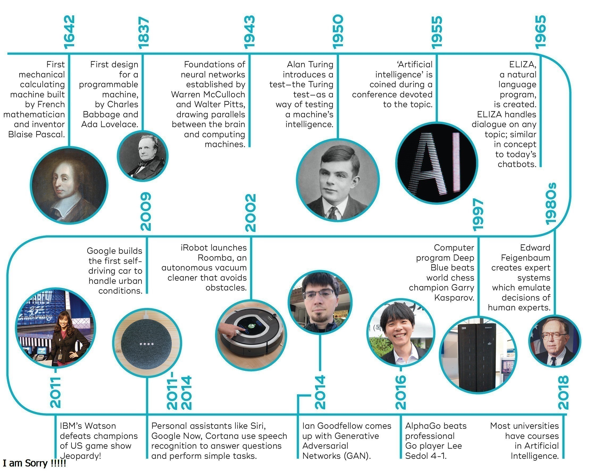
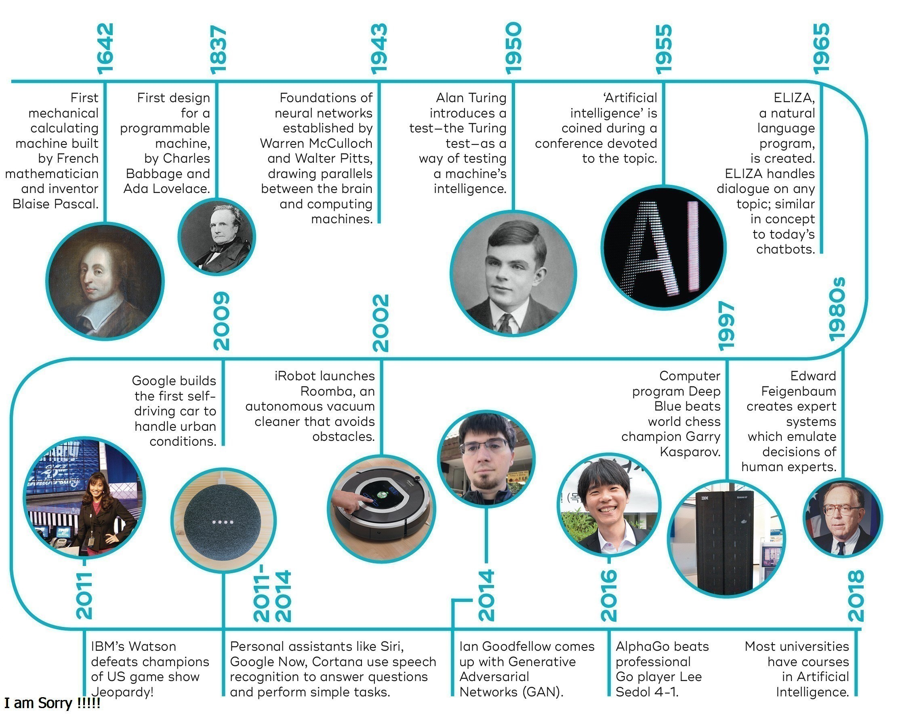

main page
Applications of artificial intelligence
Areas of application of artificial intelligence
history of artifical intelligence
history of artifical intelligence
.Thought-capable artificial beings appeared as storytelling devices in antiquity,[37] and have been common in fiction, as in Mary Shelley's Frankenstein or Karel Čapek's R.U.R.[38] These characters and their fates raised many of the same issues now discussed in the ethics of artificial intelligence.[32]
.The study of mechanical or "formal" reasoning began with philosophers and mathematicians in antiquity. The study of mathematical logic led directly to Alan Turing's theory of computation, which suggested that a machine, by shuffling symbols as simple as "0" and "1", could simulate any conceivable act of mathematical deduction. This insight, that digital computers can simulate any process of formal reasoning, is known as the Church–Turing thesis.[39] Along with concurrent discoveries in neurobiology, information theory and cybernetics, this led researchers to consider the possibility of building an electronic brain. Turing proposed changing the question from whether a machine was intelligent, to "whether or not it is possible for machinery to show intelligent behaviour"
- in 1934The first work that is generally recognized as AI was McCullouch and Pitts'formal design for Turing-complete "artificial neurons".[41
- in 1956The field of AI research was born at a workshop at Dartmouth College
- in 1954computers were learning checkers strategies
- In the early 1980s, AI research was revived by the commercial success of expert systems,[52] a form of AI program that simulated the knowledge and analytical skills of human experts
- By 1985, the market for AI had reached over a billion dollars.
- in the 1980sThe development of metal–oxide–semiconductor (MOS) very-large-scale integration (VLSI), in the form of complementary MOS (CMOS) transistor technology, enabled the development of practical artificial neural network (ANN) technology
- In the late 1990s and early 21st century, AI began to be used for logistics, data mining, medical diagnosis and other areas
- 2015 was a landmark year for artificial intelligence, with the number of software projects that use AI within Google
- By 2020, Natural Language Processing systems such as the enormous GPT-3 (then by far the largest artificial neural network) were matching human performance on pre-existing benchmarks, albeit without the system attaining commonsense understanding of the contents of the benchmarks
 
